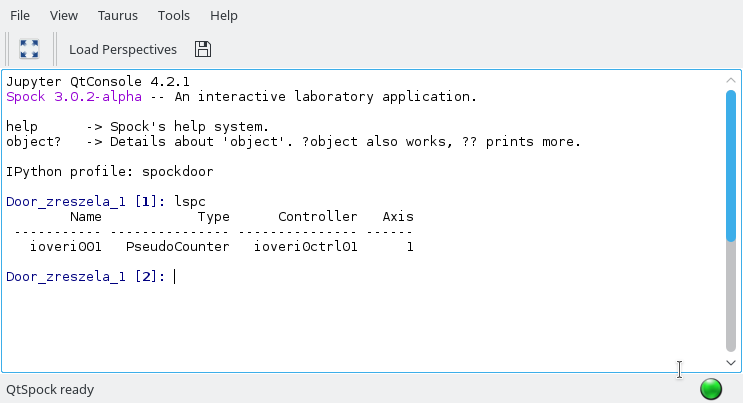

QtSpock¶
Note
The QtSpock widget has been included in Sardana on a provisional basis. Backwards incompatible changes (up to and including its removal) may occur if deemed necessary by the core developers.
Sardana provides qtconsole-based widget to run Spock.
It provides most of the Spock features and can be launched either as a standalone application
python3 -m sardana.taurus.qt.qtgui.extra_sardana.qtspock
or embedded in the TaurusGUI User’s Interface: (when Creating custom panels use:
sardana.taurus.qt.qtgui.extra_sardana.qtspock module and
QtSpockWidget
class).
QtSpock requires a spock profile spockdoor to be created and upgraded
beforehand (use spock command to create/upgrade profile).
Below you can find a list of features still not supported by QtSpock: